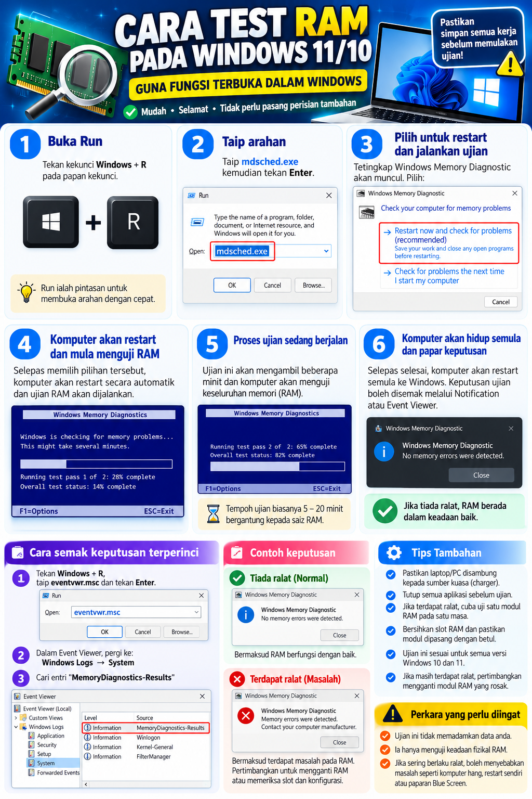
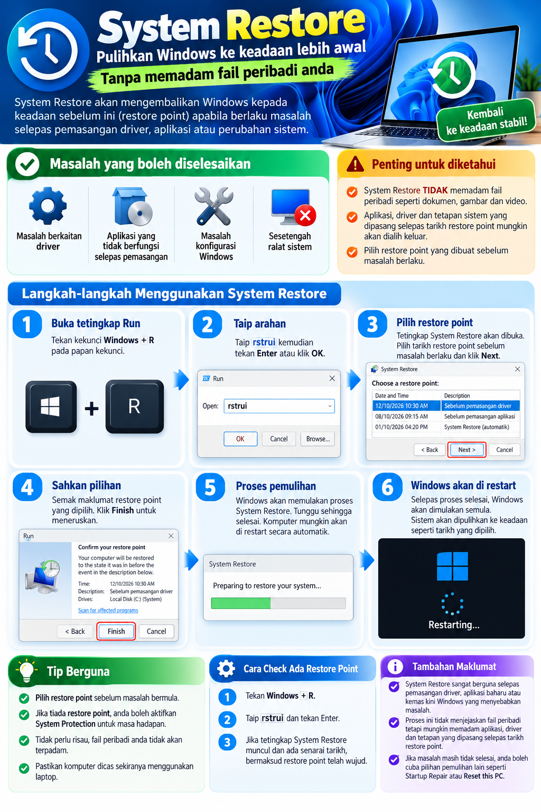
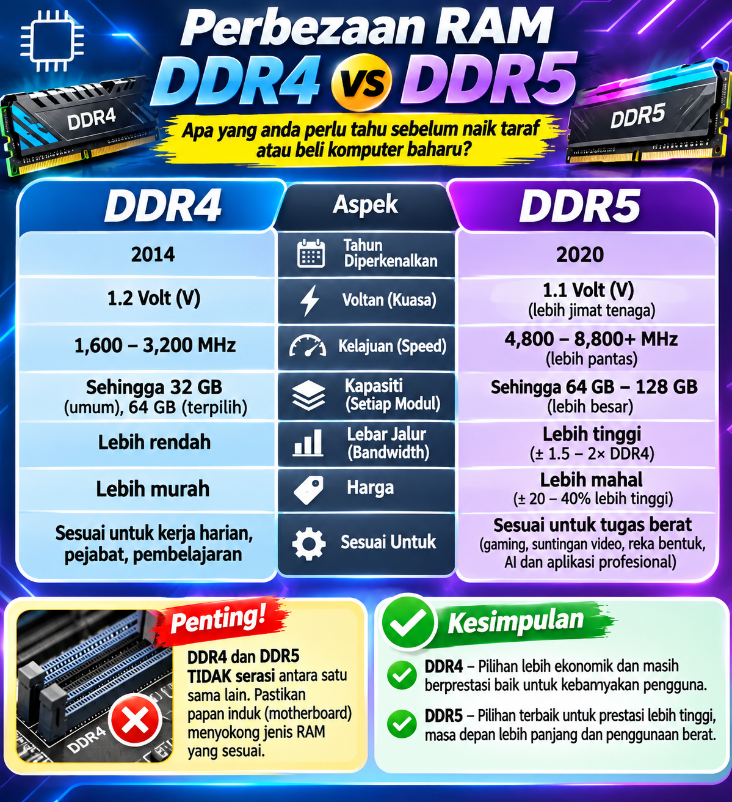
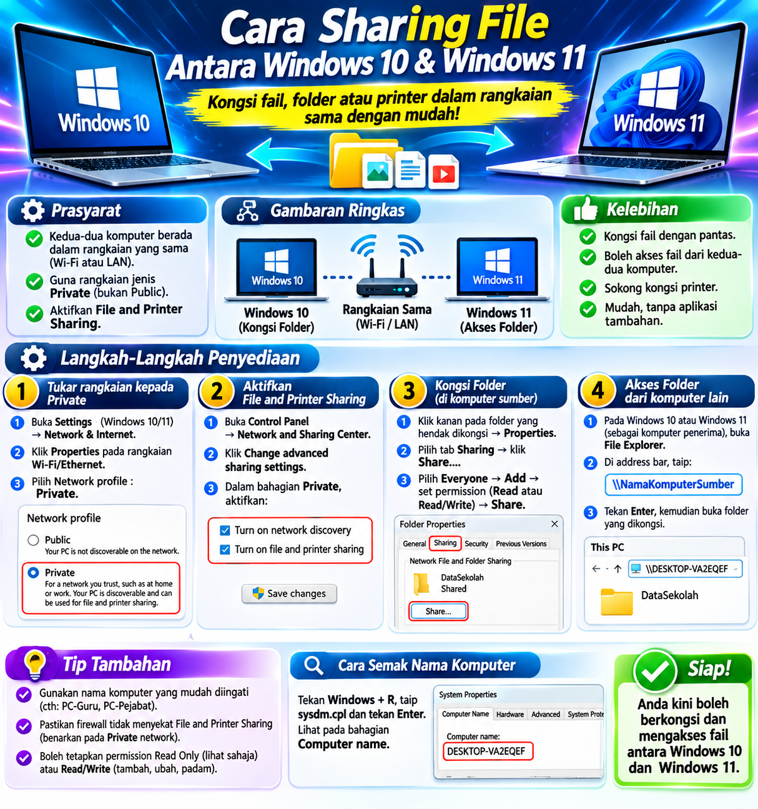
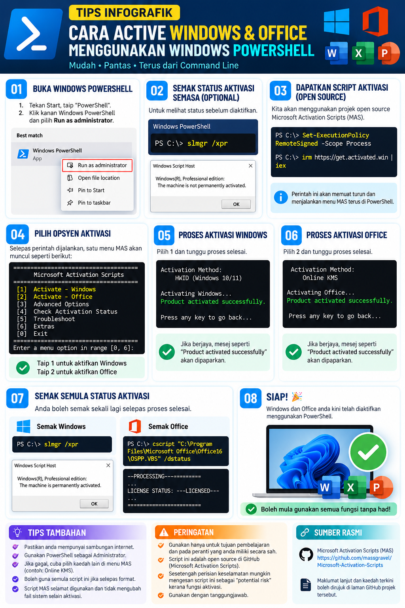

Cara Test RAM pada Windows 11/10
Simpan kerja sebelum memulakan ujian yang memerlukan komputer dimulakan semula.
Lihat panduan ↗: Cara Test RAM pada Windows 11/10 (tab baharu)Galeri infografik dan panduan ringkas untuk pengguna eGerak PTIS KBB.

Simpan kerja sebelum memulakan ujian yang memerlukan komputer dimulakan semula.
Lihat panduan ↗: Cara Test RAM pada Windows 11/10 (tab baharu)
Kenali cara menggunakan titik pemulihan sistem.
Lihat panduan ↗: Panduan System Restore Windows 11 (tab baharu)
Semak perbezaan dan keserasian sebelum memilih RAM.
Lihat panduan ↗: Perbandingan RAM DDR4 dan DDR5 (tab baharu)
Rujukan ringkas untuk berkongsi fail pada rangkaian.
Lihat panduan ↗: Perkongsian Fail Windows 10 dan 11 (tab baharu)
Lesen sah diperlukan. MAS ialah skrip pihak ketiga, bukan skrip rasmi Microsoft. Gunakan saluran aktivasi Microsoft atau pentadbir ICT yang dibenarkan.
Lihat panduan ↗: Panduan Aktivasi Windows & Office melalui PowerShell (tab baharu)